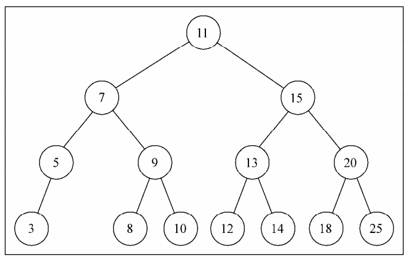
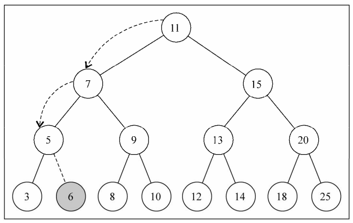

树是一种分层数据的抽象模型。现实生活中最常见的树的例子是家谱，或是公司的组织架构图。
树的相关术语
一个树结构包含一系列存在父子关系的节点。每个节点都有一个父节点（除了顶部的第一个节点）以及零个或多个子节点。
位于树顶部的节点叫作根节点。它没有父节点。树中的每个元素都叫作节点，节点分为内部节点和外部节点。至少有一个子节点的节点称为内部节点。没有子元素的节点称为外部节点或叶节点。
一个节点可以有祖先和后代。一个节点（除了根节点）的祖先包括父节点、祖父节点、曾祖父节点等。一个节点的后代包括子节点、孙子节点、曾孙节点等。
节点的一个属性是深度，节点的深度取决于它的祖先节点的数量。
树的高度取决于所有节点深度的最大值。一棵树也可以被分解成层级。根节点在第0层，它的子节点在第1层，以此类推。
二叉树和二叉搜索树
二叉树中的节点最多只能有两个子节点：一个是左侧子节点，另一个是右侧子节点。这些定义有助于我们写出更高效的向/从树中插入、查找和删除节点的算法。
二叉搜索树（BST）是二叉树的一种，但是它只允许你在左侧节点存储（比父节点）小的值，在右侧节点存储（比父节点）大（或者等于）的值。
创建BinarySearchTree类
function BinarySearchTree() {
let Node = function(key) {
this.key = key;
this.left = null;
this.right = null;
};
let root = null;
}
和链表一样，将通过指针来表示节点之间的关系（术语称其为边）。在双向链表中，每个节点包含两个指针，一个指向下一个节点，另一个指向上一个节点。对于树，使用同样的方式（也使用两个指针）。但是，一个指向左侧子节点，另一个指向右侧子节点。因此，将声明一个Node类来表示树中的每个节点。
然后，我们在树类中添加一些方法：
- insert(key)：向树中插入一个新的键。
- search(key)：在树中查找一个键，如果节点存在，则返回true；如果不存在，则返回false。
- inOrderTraverse：通过中序遍历方式遍历所有节点。
- preOrderTraverse：通过先序遍历方式遍历所有节点。
- postOrderTraverse：通过后序遍历方式遍历所有节点。
- min：返回树中最小的值/键。
- max：返回树中最大的值/键。
- remove(key)：从树中移除某个键。
向树中插入一个键
this.inset = function(key) {
let newNode = new Node(key);
if (root === null) {
root = newNode;
} else {
insertNode(root, newNode);
}
}
要向树中插入一个新的节点（或项），要经历三个步骤:
- 第一步是创建用来表示新节点的Node类实例。
- 第二步要验证这个插入操作是否为一种特殊情况。这个特殊情况就是我们要插入的节点是树的第一个节点。如果是，就将根节点指向新节点。
第三步是将节点加在非根节点的其他位置。这种情况下，需要一个私有的辅助函数:
let insertNode = function(node, newNode) { if (newNode.key < node.key) { if (node.left === null) { node.left = newNode; } else { insertNode(node.left, newNode); } } else { if (node.right === null) { node.right = newNode; } else { insertNode(node.right, newNode); } } }
insertNode函数会帮助我们找到新节点应该插入的正确位置。下面是这个函数实现的步骤。
- 如果树非空，需要找到插入新节点的位置。因此，在调用insertNode方法时要通过参数传入树的根节点和要插入的节点。
- 如果新节点的键小于当前节点的键（现在，当前节点就是根节点），那么需要检查当前节点的左侧子节点。如果它没有左侧子节点，就在那里插入新的节点。如果有左侧子节点，需要通过递归调用insertNode方法继续找到树的下一层。在这里，下次将要比较的节点将会是当前节点的左侧子节点。
如果节点的键比当前节点的键大，同时当前节点没有右侧子节点，就在那里插入新的节点。如果有右侧子节点，同样需要递归调用insertNode方法，但是要用来和新节点比较的节点将会是右侧子节点。
我们可以举个例子:let tree = new BinarySearchTree();
tree.insert(11);
tree.insert(7);
tree.insert(15);
tree.insert(5);
tree.insert(3);
tree.insert(9);
tree.insert(8);
tree.insert(10);
tree.insert(13);
tree.insert(12);
tree.insert(14);
tree.insert(20);
tree.insert(18);
tree.insert(25);
当我们执行完上述操作以后，树的结构大致如下图所示：

这时，我们执行一个如下操作:
tree.insert(6);
我们简单描述一下插入的步骤。
- 树不是空的，insertNode方法将会被调用（root, key[6]）。
- 算法将会检测行（key[6] < root[11]为真），并继续检测（node.left[7]不是null），然后调用insertNode（node.left[7], key[6]）。
- 将再次进入insertNode方法内部，但是使用了不同的参数。它会再次检测行（key[6] < node[7]为真），然后再检测（node.left[5]不是null），调用insertNode（node.left[5],key[6]）。
- 将再一次进入insertNode方法内部。它会再次检测行（key[6] < node[5]为假），（node.right是null——节点5没有任何右侧的子节点）然后将会在节点5的右侧子节点位置插入键6。
这是插入键6后的结果：

树的遍历
先序遍历（中左右）
若树为空，则空操作返回。否则，先访问根节点，然后前序遍历左子树，再前序遍历右子树。
this.preOrderTraverse = function(callback) {
let preOrderTraverseNode = function(node, callback) {
if (node !== null) {
callback(node.key);
preOrderTraverseNode(node.left);
preOrderTraverseNode(node.right);
}
}
preOrderTraverseNode(root, callback);
}
中序遍历(左中右)
若树为空，则空操作返回。否则，从根节点开始（注意并不是先访问根节点），中序遍历根节点的左子树，然后是访问根节点，最后中序遍历根节点的右子树。
this.inOrderTraverse = function(callback) {
let inOrderTraverseNode = function(node, callback) {
if (node !== null) {
inOrderTraverseNode(node.left, callback);
callback(node.key);
inOrderTraverseNode(node.right, callback);
}
}
inOrderTraverseNode(root, callback)
}
后序遍历(左右中)
若树为空，则空操作返回。否则，从左到右先叶子后节点的方式遍历访问左右子树，最后访问根节点。
this..postOrderTraverse = function(callback){
let postOrderTraverseNode = function(node, callback) {
if (node !== null) {
postOrderTraverseNode(node.left, callback);
postOrderTraverseNode(node.right, callback);
callback(node.key);
}
}
postOrderTraverseNode(root, callback);
};
搜索树中的值
在树中，有三种经常执行的搜索类型
- 最小值
- 最大值
- 搜索特定值
搜索最小值和最大值
寻找树的最小键方法
this.getMin = function() {
let getMinNode = function(node) {
if (node) {
while (node && node.left !== null) {
node = node.left;
}
return node.key;
}
return null;
}
return getMinNode(root);
}
寻找树的最大键方法
this.getMax = function() {
let getMaxNode = function(node) {
if (node) {
while (node && node.right !== null) {
node = node.right;
}
return node.key;
}
return null;
}
return getMaxNode(root);
}
因此，对于寻找最小值，总是沿着树的左边；而对于寻找最大值，总是沿着树的右边。
搜索特定值
this.search = function(key) {
let searchNode = function(node, key) {
if (node === null) {
return false;
} else if (key < node.key) {
return searchNode(node.left, key);
} else if (key > node.key) {
return searchNode(node.right, key);
} else {
return true;
}
}
return searchNode(root, key);
}
移除一个节点
this.remove = function(key) {
let removeNode = function(node, key) {
if (node === null) {
return null;
}
if (key < node.key) {
node.left = removeNode(node.left, key);
return node;
} else if (key > node.key) {
node.right = removeNode(node.right, key);
return node;
} else {
// 第一种情况——一个叶节点
if (node.left === null && node.right === null) {
node = null;
return node;
}
// 第二种情况——一个只有一个子节点的节点
if (node.left === null) {
node = node.right;
return node;
} else if (node.right === null) {
node = node.left;
return node;
}
// 第三种情况——一个有两个子节点的节点
let aux = findMinNode(node.right);
node.key = aux.key;
node.right = removeNode(node.right, aux.key);
return node;
}
}
root = removeNode(root, key);
}
我们来简单描述一下删除节点的步骤:
- 检测当前的节点是否为null，如果为null，那么说明键不存在于树中，所以返回null。
- 然后，我们要找到在树中要移除的节点，如果要找的键比当前节点的值小，就沿着树的左边找到下一个节点。如果要找的键比当前节点的值大，那么就沿着树的右边找到下一个节点。
- 如果我们找到了要找的键（键和node.key相等），就需要处理三种不同的情况:
- 移除一个叶节点
第一种情况是该节点是一个没有左侧或右侧子节点的叶节点——行。在这种情况下，我们要做的就是给这个节点赋予null值来移除它）。但是当学习了链表的实现之后，我们知道仅仅赋一个null值是不够的，还需要处理指针。在这里，这个节点没有任何子节点，但是它有一个父节点，需要通过返回null来将对应的父节点指针赋予null值。 - 移除有一个左侧或右侧子节点的节点
第二种情况，移除有一个左侧子节点或右侧子节点的节点。这种情况下，需要跳过这个节点，直接将父节点指向它的指针指向子节点。如果这个节点没有左侧子节点，也就是说它有一个右侧子节点。因此我们把对它的引用改为对它右侧子节点的引用并返回更新后的节点。如果这个节点没有右侧子节点，也是一样——把对它的引用改为对它左侧子节点的引用并返回更新后的值。 - 移除有两个子节点的节点
现在是第三种情况，也是最复杂的情况，那就是要移除的节点有两个子节点——左侧子节点和右侧子节点。要移除有两个子节点的节点，需要执行四个步骤。
1) 当找到了需要移除的节点后，需要找到它右边子树中最小的节点。
2) 然后，用它右侧子树中最小节点的键去更新这个节点的值。通过这一步，我们改变了这个节点的键，也就是说它被移除了。
3) 但是，这样在树中就有两个拥有相同键的节点了，这是不行的。要继续把右侧子树中的最小节点移除，毕竟它已经被移至要移除的节点的位置了。
4) 最后，向它的父节点返回更新后节点的引用。
- 移除一个叶节点
关于为什么是从右边子树中找到最小的节点，其实这里也可从左边子树中找到最大的节点作为节点，只要这个替换节点替换后整个树结构仍然符合二叉树根节点的左子树都比根节点小，右子树都比根节点大这个定义，这个节点就是可替换节点。最后，我们补上第三种情况中找到最小节点的方法。
let findMinNode = function(baseNode) {
let getMinNode = function(node) {
if (node) {
while (node && node.left !== null) {
node = node.left;
}
return node;
}
return null;
}
return getMinNode(baseNode);
}